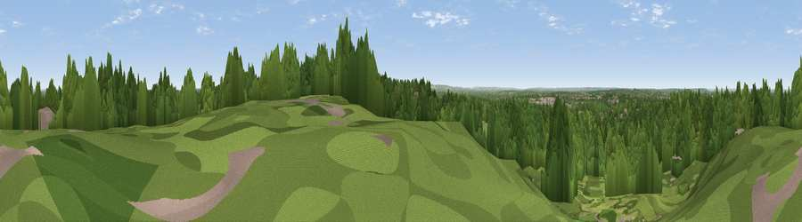

Viewpoint near Whiteley Village
#39639 in England · top 34% of its area beats it · near Whiteley Village · access?Where it is
The exact computed spot (TQ 08325 63025). Click the marker for map links.
Public access: no public right of way or access land is recorded at this exact spot — it may be on private land. Computed from Natural England's CRoW access layer and OpenStreetMap rights of way — not the legal definitive map. Always verify locally.
The view, rendered

A 360° render of this exact spot computed from the terrain model, tree cover and land cover — summer colours, afternoon light, calibrated against photographs of famous viewpoints. Real trees, hedges and buildings will differ in detail.
The panorama
Grey silhouette: terrain skyline in each direction (720 bearings, Earth curvature and refraction included). Dashed green: skyline with trees (+15 m) and buildings (+8 m) as obstacles. Blue strip: how far the ground is visible on each bearing.
Where the view opens
Wedge length = distance to the farthest visible ground on that bearing (vegetation-aware). Rings at 10, 25 and 50 km.
What fills the view
73% woodland · 17% grassland · 9% built-up ·
Angular shares of the visible panorama (visual magnitude), not map area. Landscape diversity 0.35 (0–1 Shannon).
Key numbers
More beautiful places nearby
The staircase of upgrades: each row has a higher view potential than everything closer. Driving times are estimates from straight-line distance, calibrated against real road routing — check an actual route before setting out.
| Place | Direction | Drive | Score |
|---|---|---|---|
| Viewpoint near Whiteley Village | S · 1 km | ~4 min | 28.5 |
| Viewpoint near West End | E · 5 km | ~11 min | 30.4 |
| St Ann's Hill | NW · 7 km | ~15 min | 33.7 |
| Viewpoint near Shere | S · 13 km | ~24 min | 37.7 |
| Viewpoint near Westcott | SSE · 14 km | ~25 min | 43.5 |
| Viewpoint near Westcott | SSE · 14 km | ~25 min | 43.8 |
| Viewpoint near Shere | S · 14 km | ~26 min | 50.1 |
| Viewpoint near Box Hill Village | SE · 16 km | ~29 min | 66.7 |
51.35598, -0.44570 · source: screening · position refined by local search. Computed location — check access rights before visiting.